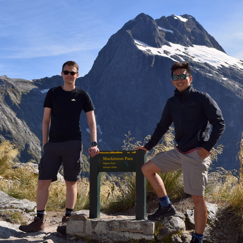
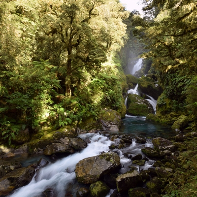
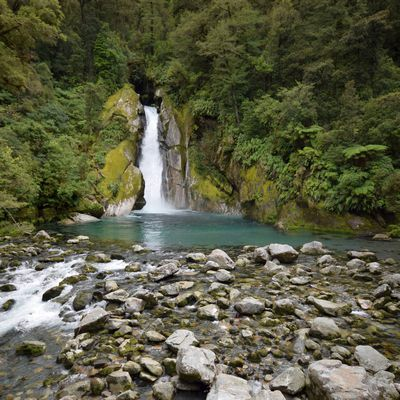
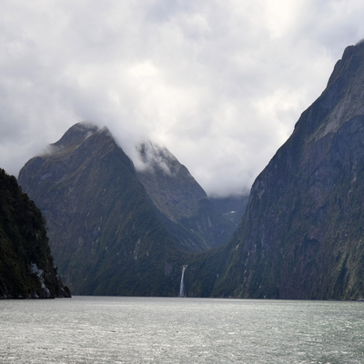
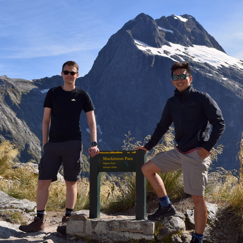
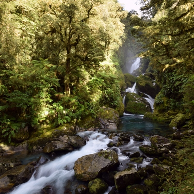
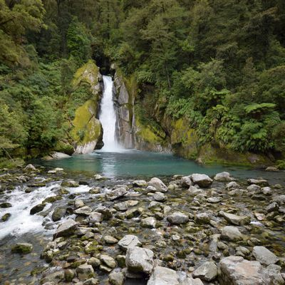
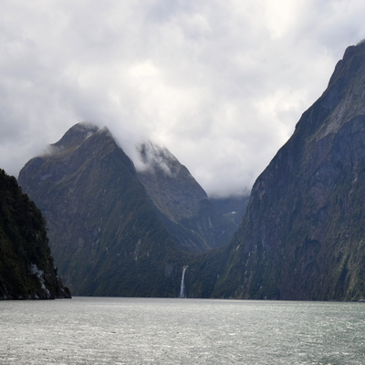
I gratefully tagged along with my housemate on this trip. He wanted to make this trip purely for the Milford Sound Track, which he missed out on due to inclement weather. We stayed on the South Island - mostly around Queenstown.
We were due to start the Milford track the day after we arrived, so after arriving into Queenstown, we picked up our rental (got a free upgrade to an SUV), and drove straight to Te Anau. This took a couple hours.
In Te Anau, we made sure we had enough food for the coming 3 day, 2 night hike. We also had the time to visit the nearby animal sanctuary.
The hike itself was amazing. It starts off with a boat ride from Te Anau Downs, which takes you to the actual hike. The hike takes you through the Fiordland National Park - almost devoid of human activity. They strongly emphasise the conservational efforts and direct you to avoid straying from the track and leaving rubbish.
The first day is very short and quite easy, so a very good ease into the next day, where you ascend to the peak before ascending a little to reach the second hut. The Last day is spent descending a bit and walking on flat terrain, before being taken to Milford Sound by boat.
The scenery is gorgeous, with views from up high, crystal clear water, and pretty friendly birds hungry for snacks. The non-commercial huts are pretty well maintained and comfortable and the guides who stay there are very knowledgable!
I would strongly recommend this for anyone up for a bit of a challenge. Ample hiking experience probably isn't necessary - the walk lengths aren't ridiculous and you have plenty of time to take breaks and enjoy the scenery. Just hope the weather is good!
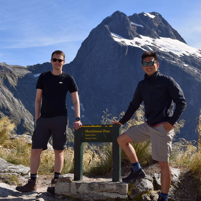
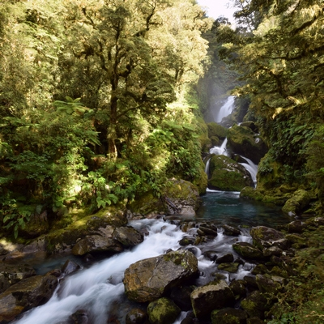
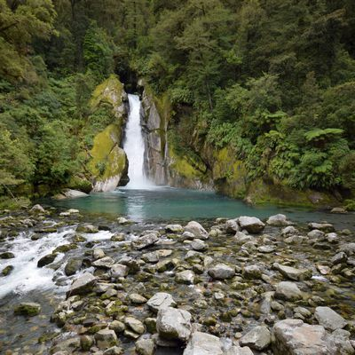
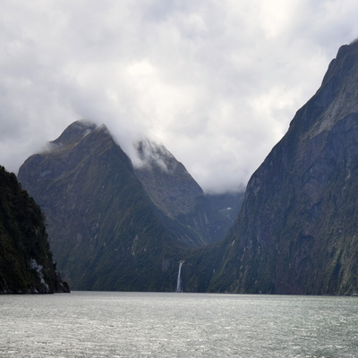
After the long hike, we returned to Queenstown and for touristy and easy-going trips. We drove up to Chinaman's Bluff (made possible by the 4WD) and got eaten up by Mozzies. We hung around Glenorchie and eventually made our way back to Queenstown.
The next day, I, apparently not had enough hiking, went up to the Ben Lomond Scenic Reserve, which has a georgous view of Queenstown and Lake Wakatipu. We then visited Arrowtown and made a visit to the wineries nearby.
Our last day before departing was spent white-water rafting, which I had a great time doing!
 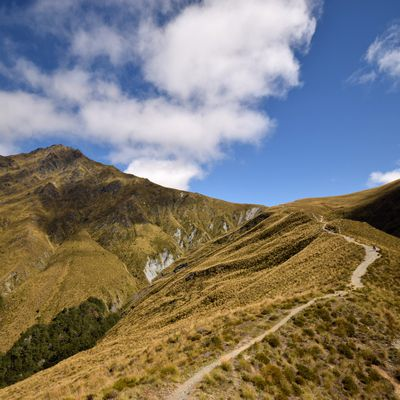
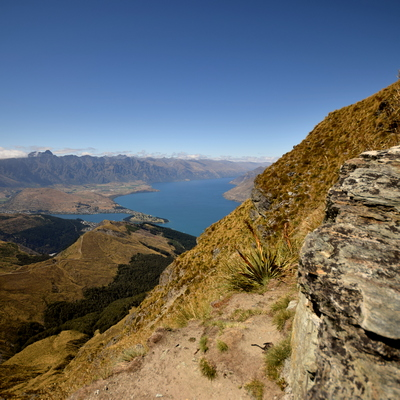
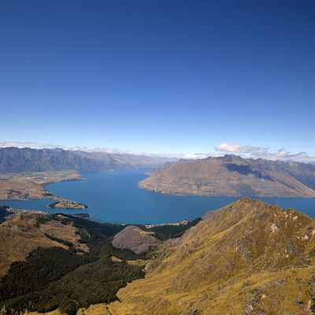
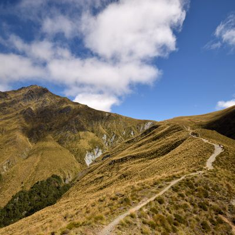
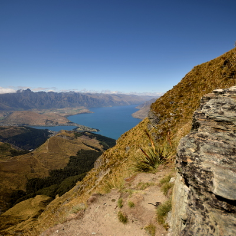
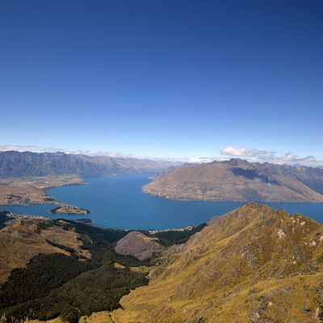
The last two days of our trip was spent futher north, seeing some beatiful bodies of water, and of course, more hiking!
We first visited Lake Pukaki and Mt Cook, which are next to eachother. Lake Pukaki was insanely large and all vivid cyan blue.
Mt Cook is just down the road. We did the Mueller Hut Route, which is usually a two day thing - many spend the night up on the mountain, but we didn't due to forecast bad weather. The hike itself was pretty steep - so I found it understandable that people would want to stay the night.
We had dinner at Lake Tekapo, which is a pretty touristy town overlooking a lake. You might've seen many photos of the tree haha. It was pretty overdone, so I didn't take any.
New Zealand was amazing, and a hiker's heaven! But it also has really great food and shorter hikes for those less inclined. Queenstown felt like a European Ski town, but without the distance! I would hiiighly recommend Milford Track, even for infrequent hikers. I was incredibly fortunate to have been able to tag along on my housemate's trip.